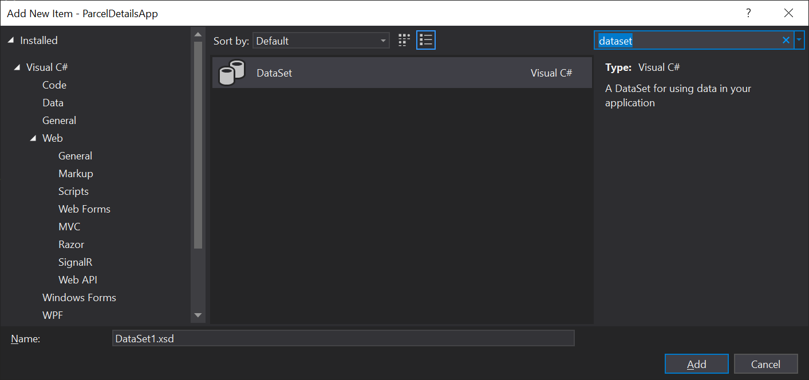

How I Converted ADO.NET DataSets into Dapper data models
Parcel Details is a monolithic .NET web app written using the now deprecated Web Forms framework that Microsoft introduced in 2002. For data access this project uses a technology called ADO.NET DataSets. In this article I’ll walk you through how I silently replaced the entire data access layer of this web app with Dapper-based data models.
To create a DataSet in Visual studio you can add it to your project like any other .cs or .cshtml file. Upon creating the DataSet you’ll be greeted with page that you can fill with drag-and-drop elements by right clicking and creating a new TableAdapter. These TableAdaptors are models of specific tables in your database.
A wizard leads you through the process of picking out which database table you’d like to query, what operations (Create, Read, Update, and Delete) you’d like to perform on this table, and what SQL queries you specifically want to execute when you call the methods of this TableAdapter.
With the wizard completed a new little object will appear on your screen that shows the fields in the database table and the names of the methods you defined to execute specific SQL actions against this table.
In the background Visual Studio auto-generates a bunch of code to define the TableAdapter and its methods. If you modify the drag-and-drop object this auto-generation process will repeat and if you modify the auto-generated code this whole process gets unhappy.
With the exception of the actual SQL statements, for which there is an additional SQL definition wizard, this is basically a no-code database interaction layer.
But I am a programmer; I like code.
I want more control and I want a data access layer that my coworkers and I can reason about with ease. This means reducing the amount of abstraction between the database and the data models in my application.
Hello Dapper
Micro-ORMs are a hot topic in many application domains, but specifically in .NET land there seems to be four schools of thought that I’ve encountered.
- The Microsoft Docs say to use EF Core.
- I don’t think EF Core’s features are necessary, let’s use something simpler (Dapper).
- I don’t like ORMs, and I know how to use basic ADO.NET connections, I’ll roll my own. (Re-inventing Dapper)
- What’s an ORM? Just make it work. Curse Microsoft for making this hard.
These are all valid responses. For greenfield applications #1 makes the most sense to me. Requirements can change rapidly and the flexibility that you can get from using a full ORM like EF Core can make pivoting to meet new customer requirements trivial. Plus the knowledge base and community that’s built up around EF Core over the past few years is pretty good.
For existing apps like my own I think #2 makes the most sense. I don’t want to reinvent the wheel. I don’t want to provide training or documentation on the boilerplate of my database interaction layer.
I would much rather point someone to a tutorial on using Dapper, and then once they’re comfortable with the library walk them through how I’ve mobilized its capabilities in my specific application. This saves me time and it increases the rate at which new developers can come up to speed on the codebase.
I had a coworker go with #3 on a large team project around the middle of last year. This individual is the most talented developer I work with and they have an intuitive grasp of our databases. I am not this good. Worse yet, the other developers we onboarded later in the project were from the camp described by #4 and struggled mightily to understand data models and how to write integration tests for them.
Getting back to the plot, Dapper is a Micro-ORM that offers a thin abstraction over the iDbConnection interface in .NET. If an ADO.NET database provider exists for the specific database you want to talk to then you can use Dapper. This is in contrast to EF Core which requires its own EF Core-specific database providers.
ADO.NET database providers have been around since the dawn of time, or at least the dawn of dotnet. One of our largest databases is an Oracle 11g instance. We also have a variety of MS-SQL databases that all have to play nice with our data models. Because EF Core doesn’t have a provider that supports our specific and admittedly quite old, Oracle database, I ruled it out. Thanks to its simplicity Dapper does not suffer from this flaw and I can use Oracle.ManagedDataAccess, an existing ADO.NET database provider.
If I need to switch a data access method from one database to another all I have to do is swap the name of the database provider for that specific method and then rewrite the SQL statement in a syntax compatible with the new database provider. The structure and responsibilities of the data access method stay the same. I find this quite satisfying from an object-oriented programming PoV.
DataSets to data models
I had seven DataSets that I needed to convert into data models. I started by creating a new DataAccess folder inside the project and then I created a folder for each of the databases this app needs to talk to.
For the sake of simplicity I kept the namespace of all of these models limited to {appName}.DataAccess rather than what Visual Studio defaults to when you create a new class {appName}.DataAccess.{databaseFolderName}, which mirrors the folder structure of the application. I find that this practice reduces the amount of cognitive load involved when referencing a data model while maintaining a workable folder structure as opposed to a grab bag of junk.
Then I opened up one of the smaller DataSets that modeled just a couple of tables and went to work. When looking at a TableAdapter, if you click on the specific data access method you’re interested in; its name and the SQL statement it uses will appear in the properties panel in Visual Studio. From there you can copy the name, and extract the raw SQL it use to query the database.
I like to test SQL statements before I put them into code. Oracle’s SQL Developer application is the best tool I have to run queries against our Oracle 11g database and get immediate feedback.
For our MS-SQL database I used the venerable SQL Server Management Studio to fill the same role. I copied the SQL from the data access method, ran it against the database, and then looked at the results returned by query to verify that it worked right.
Based on the result of the query I created a new class in C# and wrote up the getters and setters that mirror that result. As a matter of convention, I kept each of the data models in their own class file, although they all shared the DataAccess namespace. Getters and Setter are great but we need a data access method to make this data model useful.
For this I followed the first example from this Dapper Tutorials site. It’s a static method that returns an instance of the data model. It wraps the Dapper call in a using block that creates an instance of the ADO.NET database provider that Dapper then uses to execute the SQL statement that was defined in this method as a string and passed into the Dapper call as its first parameter.
What Dapper returns to your method can be one of four things:
- A data model with data in it.
- A data model with nothing in it.
- Null
- An exception.
#3 and #4 are configurable within Dapper based on which query you use.
For example QueryFirstOrDefault will never return an exception but QuerySingle will return an exception if the database responded with more than one row or it responds with no rows.
This is a pick your poison moment, but I prefer to write my flow control around checking for specific ranges of valid values as opposed to checking for nulls or wrapping calls in try catch statements to handle exceptions thrown by the data model.
Often I’ll find myself using the null-coalescing operator to check for the OrDefault response and then creating an instance of the data model where I just return just the parameters that were passed in.
Using the data models
Alright, now I’ve got a data model that returns the same data as the TableAdapter I built it to replace. But how do you actually perform the swap?
Step one is to use the Find All command to locate all of the places in the app where the name of that specific TableAdapter is mentioned. Then you can work through them on a case by case basis; be forewarned this isn’t a copy and replace kind of solution, rather this will require a bit of thinking.
On the left we have the version of this function where I’ve used a data model and on the right we have the older version that uses a TableAdapter. The key points to note here are that the version with a data model is more succinct, doesn’t require nested using blocks, a DataTable, or DataRows. The data model is a much simpler abstraction which makes it easier to pick out flaws like bad variable naming (ex. OtherAssessments and otherAssessements), oops.
It also allows me to make better use of C#’s static typing to prevent errors. If you compare how the “local” string is set inside each foreach loop you can see that in the version on the right I have to treat the DataRow like an array and I’m calling the ToString method because who knows what’s really in row[2]? In the version on the left I’m just grabbing a property of the data model and I don’t have to do any conversion because it’s already a string. In this way the data model makes it easier to reason about the data it contains and prevent simple mistakes.
To flip this on its head for a moment, the use of relatively complicated structures like a TableAdapter and a DataTable didn’t help the original author to write better code. Worse yet, they actively made it difficult for subsequent programmers to reason about and modify the existing code. There certainly can be advantages to adding additional abstractions, but abstraction have a cost. There’s an engineering trade off being made here between complexity and abstraction.
It took about two weeks for me to convert all seven DataSets into forty-one data models and replace their use in this web app’s code base. Of course, it wasn’t a completely painless transition. In the week following the introduction of this new DataAccess layer I triaged about 7 new bugs that our telemetry picked up in production. These issues were mostly due to the data models attempting to serialize poorly formatted data from the database into static types.
Specifically, one table kept returning poorly formatted dates that would occasionally fail to be serialized into DateTimes. The solution here was to serialize it as a private string and then use the DateTime.TryParse() technique to set a similarly named public field in the data model.
Is there really anything wrong with DataSets and their TableAdapters? Well, no. They are a perfectly functional way to interact with a database inside of a C# app. But for Parcel Details and my team, working with data models is a much easier task than maintaining and extending these increasingly grumpy DataSets.
Not only is it possible to convert DataSets into data models in a reasonable amount of time, but it’s kind of fun.